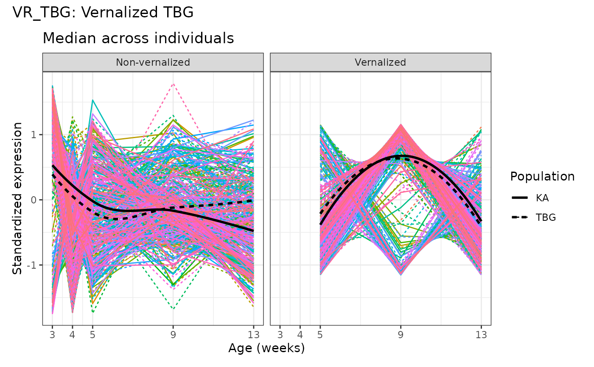

Spaghetti plot for Specific Gene Set
Usage
spaghettiPlot1GS(
gs_index,
gmt,
expr_mat,
design,
var_time,
var_indiv,
sampleIdColname,
var_group = NULL,
var_subgroup = NULL,
plotChoice = c("Medians", "Individual"),
loess_span = 0.75
)Arguments
- gs_index
index of the specific gene set in
gmt.- gmt
a
listof elements:geneset,geneset.nameandgeneset.description(seeGSA.read.gmt).- expr_mat
a
data.framewith numerics of sizeG x ncontraining the raw RNA-seq counts fromnsamples forGgenes.- design
a
data.frameorDFramecontaining the information of each sample (SampleID).- var_time
the
timeorvisitvariable contained indesign.- var_indiv
the patient variable contained in
designdata.- sampleIdColname
a character string indicating the name of the sample ID variable in
designto be matched with thecolnamesofexpr_mat- var_group
a group variable in
designdata to divide into two facets. Default isNULL.- var_subgroup
a subgroup variable in
designdata to add 2 curves on plot for each subgroup. Default isNULL.- plotChoice
to choose which type of plot (either
"Medians","Individual"or both). Default isc("Medians", "Individual").- loess_span
smoothing span. Default is
0.75.
Examples
data(baduel_5gs)
design$Indiv <- design$Population:design$Replicate
design$Vern <- ifelse(design$Vernalized, "Vernalized", "Non-vernalized")
library(ggplot2)
spaghettiPlot1GS(gs_index = 3, gmt = baduel_gmt, expr_mat = log2(expr_norm_corr+1),
design = design, var_time = AgeWeeks, var_indiv = Indiv,
sampleIdColname = "sample", var_group=Vern, var_subgroup=Population,
plotChoice = "Medians", loess_span= 1.5) +
xlab("Age (weeks)") + guides(color= "none")
